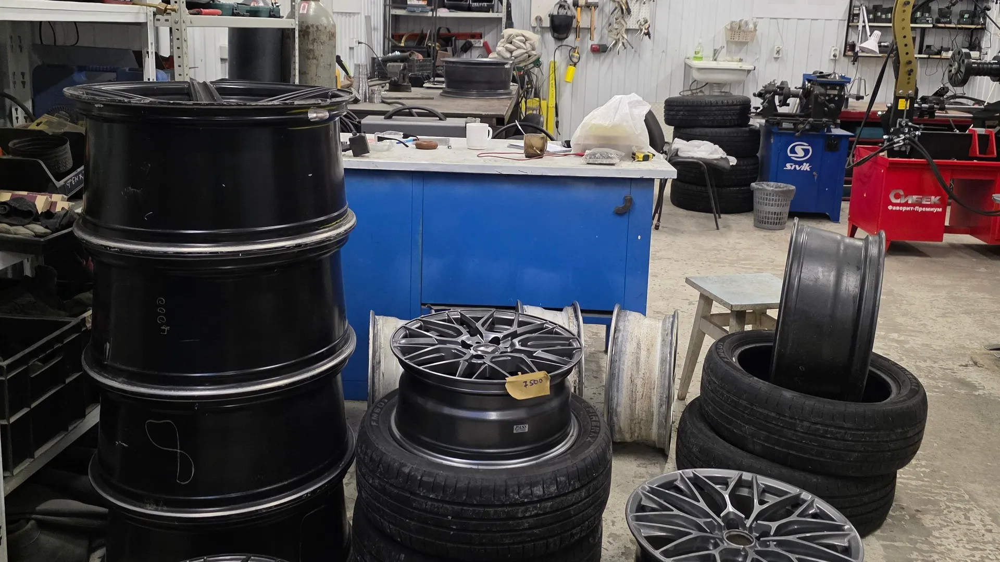
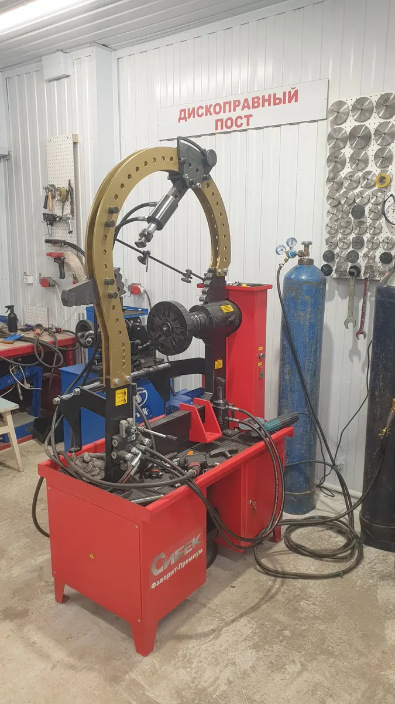
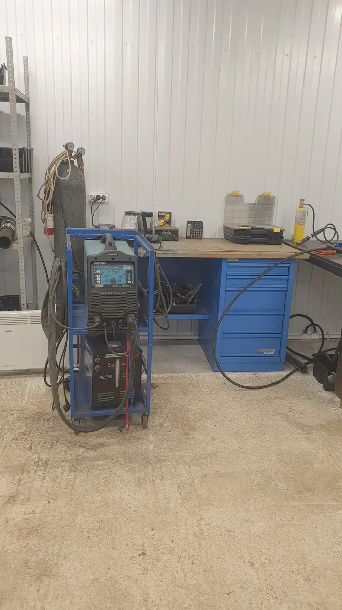
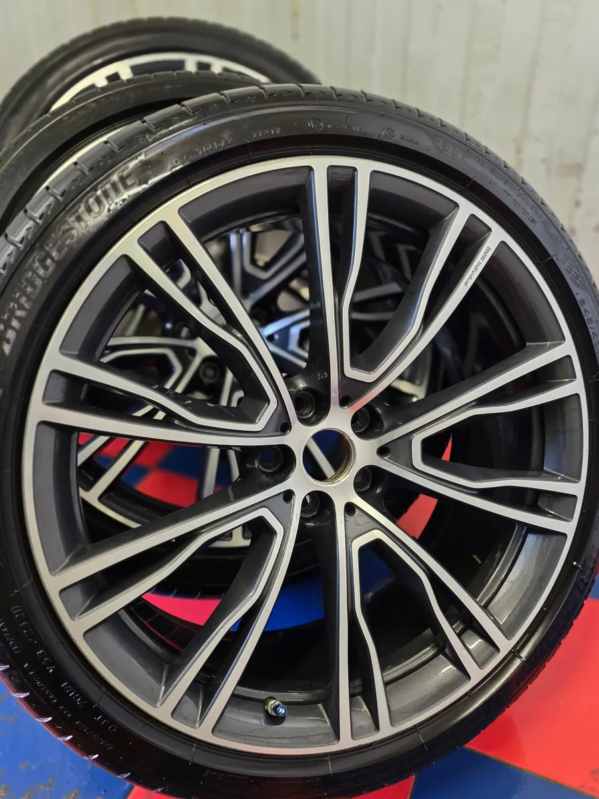

Шиномонтаж · правка дисков · Ижевск
Правка дисков и шиномонтаж в Ижевске
Выправим и заварим литой или кованый диск, переобуем и отбалансируем. Цены видны заранее, мастер всё покажет и объяснит.
- Рейтинг 5,0 на Яндекс Картах
- Правка и сварка дисков аргоном
- Каждый день с 9:00 до 20:00

Цены
Цены с нашей карточки на Яндекс Картах. Шиномонтаж и балансировка - за одно колесо.
Шиномонтаж
- Шиномонтаж колеса до 24 дюймов200 ₽ за колесо
- Балансировка200 ₽ за колесо
- Мойка колеса100 ₽ за колесо
- Чистка диска от скотча грузиков100 ₽ за диск
- Ошиповка ремонтными шипами25 ₽ за шип
Диски и сварка аргоном
- Правка литых и кованых дисков1 500 ₽ за диск
- Сварка литых и кованых дисков1 500 ₽ за диск
- Сварка алюминия50 ₽ за 1 см шва
- Сварка кузовных деталей из алюминия3 000 ₽
- Сварка трубок автокондиционера3 000 ₽
- Ремонт радиаторов и интеркулеров5 000 ₽
- Ремонт алюминиевых лодок и катеров5 000 ₽
Точную стоимость сварки и ремонта радиаторов мастер называет после осмотра.
Как записаться
- 01
Выбрали услугу и время
Прямо на сайте, за минуту.
- 02
Отправили сообщение в Telegram
Текст уже готов, остаётся нажать «отправить».
- 03
Мастер подтверждает время
Если нужно, уточнит размер диска или повреждение по фото.
- 04
Приезжаете на Ярушки, 25
Мастер покажет, что сделано с диском, и объяснит.



За что нас хвалят
Вибрация и биение уходят
Правим диски на гидравлическом стенде - так пишут клиенты в отзывах.
Мастер объясняет, что с диском
Покажет повреждение и подскажет, что ещё стоит проверить.
Чисто, всё на своих местах
Современное оборудование для шиномонтажа, правки и сварки.
Варим не только диски
Алюминиевые кронштейны, детали кузова, радиаторы, лодки.
Отзывы с Яндекс.Карт
«Заехал на правку дисков, всё сделано по красоте,вибрация и биение ушло. Сергей мастер своего дела, всё рассказал объяснил. Рекомендую данного Мастера.»
Андрей · 13 июня
«Как ни странно, это шиномонтаж, в который хочется вернуться. Чисто, всё на своих местах. Оборудование современное. Мастер адекватный, опрятный. Спасибо большое за решение моей проблемы.»
Сергей Новиков · 13 августа
«Сергей лучший мастер в ижевске, все сделал на высшем уровне, подсказал на ошибки, диск отремонтировал шедеврально, при шиномонтаже только сюда!!!»
Иван Бушмакин · 11 июня
Отзывы с карточки на Яндекс.Картах, без правок.
Частые вопросы
Работаете в выходные?
Да, каждый день с 9:00 до 20:00.
Беретесь за кованые диски?
Да, правим и варим и литые, и кованые диски любого диаметра.
Сколько стоит переобуть машину?
Шиномонтаж - 200 ₽ за колесо до 24 дюймов, балансировка - ещё 200 ₽ за колесо.
Можно привезти только диск без машины?
Напишите в Telegram и пришлите фото диска - мастер скажет, возьмётся ли и сколько это будет стоить.
Погнули диск? Напишите - подскажем
- Адрес
- улица Ярушки, 25, Ижевск
- Часы
- Каждый день 09:00-20:00
- Телефон
- +7 (952) 404-65-45